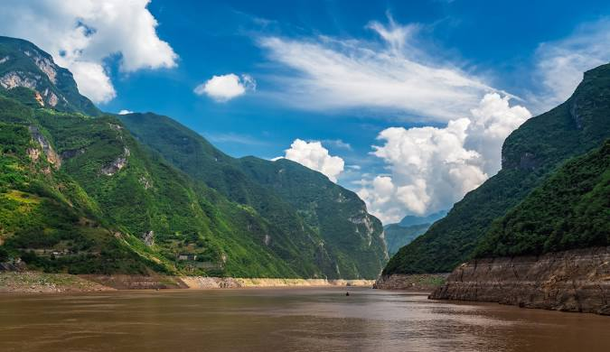
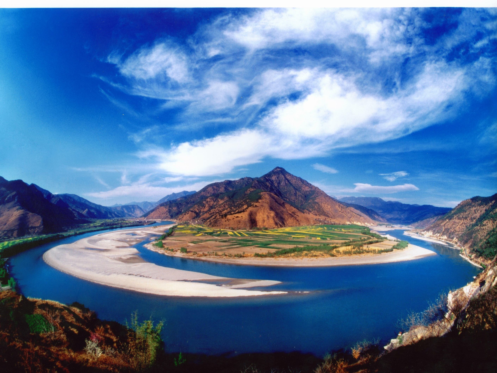

he Yangtze River, known as Chang Jiang in Mandarin, is not only the longest river in Asia but also holds the title of the third longest river in the world. Stretching approximately 6,300 kilometers (3,917 miles) from its source in the Tibetan Plateau to its mouth at the East China Sea near Shanghai, the Yangtze plays an indispensable role in the history, economy, and culture of China.
Below, the significance of the Yangtze River is examined through various aspects
Historical Significance
Foundations: The Yangtze River has been a cradle of civilization, providing fertile lands for agriculture that enabled early societies to flourish. It has long supported the cultivation of rice, which became a staple of Chinese diets.
Trade and Connectivity: As a major trade route, the river facilitated the exchange of goods and ideas between different regions of China, significantly contributing to the economic and cultural interconnectedness of the nation.
Strategic Importance: The river has been pivotal for military campaigns throughout Chinese history. Regions along the Yangtze, particularly the Three Gorges, have been crucial for controlling transportation and trade.
Symbolism: The Yangtze has inspired a rich tapestry of literature, art, and folklore, serving as a symbol of resilience and continuity in Chinese culture.
Economic Impact

Trade and Commerce: Major cities like Chongqing, Wuhan, and Nanjing are situated along the river, making it a critical corridor for transporting goods, including agricultural products, coal, and oil.
Hydroelectric Power: The Three Gorges Dam, the largest hydroelectric project in the world, has transformed the river into a significant source of renewable energy, contributing to China’s energy security.
Industrial Development: The river supports various industries along its banks, facilitating the growth of manufacturing and shipping sectors that are crucial to China’s economy.
Tourism: The stunning landscapes and cultural heritage along the Yangtze attract millions of tourists each year, contributing to the local and national economy.
Environmental Challenges
Pollution: Industrial discharge and urban runoff have severely impacted the water quality of the Yangtze, threatening both human health and aquatic life.
Biodiversity Loss: The river is home to numerous endangered species, including the Yangtze giant softshell turtle and the baiji dolphin. Habitat destruction and overfishing have pushed these species closer to extinction.
Impact of Dams: While the Three Gorges Dam provides benefits, it has altered natural river flow patterns, affecting sediment transport and aquatic ecosystems.
Climate Change: Changing weather patterns and increasing extreme weather events pose additional threats to the river’s health and the communities dependent on it.

Conservation Efforts
Government Initiatives: The Chinese government has implemented policies to reduce pollution, regulate fishing, and protect habitats, such as establishing nature reserves along the river.
Community Engagement: Local communities are increasingly involved in conservation efforts, recognizing the importance of the river to their livelihoods and cultural identity.
International Cooperation: There is potential for collaboration with international organizations to share best practices and technologies for sustainable river management.
Cultural Heritage
Art and Literature: The Yangtze has been a muse for countless artists and writers throughout history, celebrated for its natural beauty and the life it sustains. This cultural heritage enriches the national identity.
Festivals and Traditions: Festivals such as the Duanwu Festival (Dragon Boat Festival) highlight the cultural significance of the river, fostering community spirit and connections to ancestral traditions.
Folklore and Legends: The river is steeped in folklore, with numerous legends reflecting its significance in the lives of local people and its portrayal in various art forms.
Future Outlook
Sustainable Development: Balancing economic growth with environmental protection is essential for the Yangtze’s future. Sustainable practices in agriculture, industry, and tourism are vital to preserve its health.
Climate Resilience: Addressing climate change impacts through adaptive management strategies can help protect the river and the ecosystems it supports.
Education and Awareness: Raising awareness about the importance of the Yangtze River and its challenges can foster a culture of conservation among the public and policymakers.
Conclusion
The Yangtze River is much more than a geographical feature; it is a dynamic lifeline that has shaped the history, economy, and culture of China. As it continues to flow through the heart of the nation, the Yangtze brings both opportunities and challenges. The path forward requires a commitment to sustainable management, ensuring that this vital river remains a source of life and inspiration for generations to come. Balancing development with environmental stewardship will be crucial to preserving the Yangtze River's legacy as a cornerstone of Chinese
 The Yangtze River: A Lifeline of China
The Yangtze River: A Lifeline of China